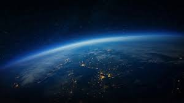

Landforms
Landforms are the natural features on the Earth's surface. They vary in size and height. The major landforms are classified into three categories - mountains, plateaus and plains.
Mountains
Mountains are huge masses of land that rise higher than the surrounding area
to great heights. They are made from rocks and Earth. They occupy about one-fourth
of the total land area of the Earth. Some mountains are also found under the sea.
Mountains can rise up to 900m in comparision to their surrounding areas. The very
top of the mountain is called a peak. The bottom of the mountian
is called the base.
There are many types of mountains - Fold mountains, Block mountains and volcanic mountains.
Fold mountains are further divided into - Young Fold Mountains and Old Fold Mountains.
Fold mountains are formed from a collision of two tectonic plates, deep beneath the Earth's surface.The movement of fold mountains are mainly horizontal and cause fold or wrinkles.
These mountains generally comprise parallel ranges or ridges. Most of the mountains in the world
are fold mountains.
